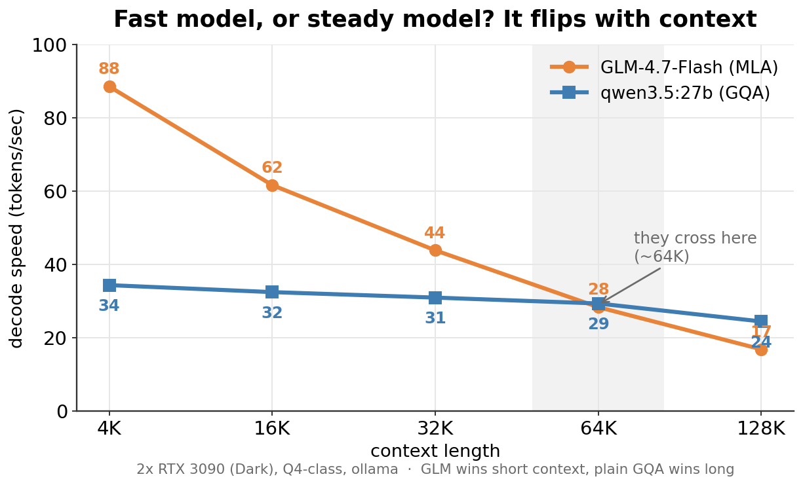
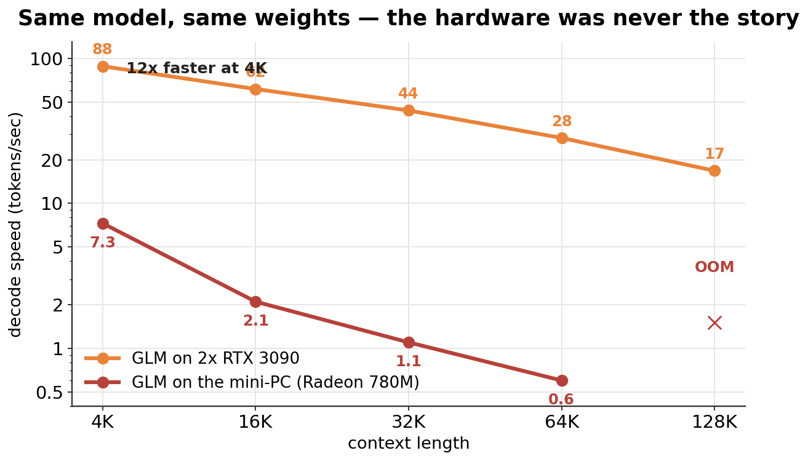
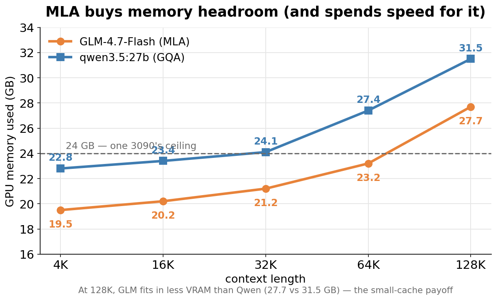
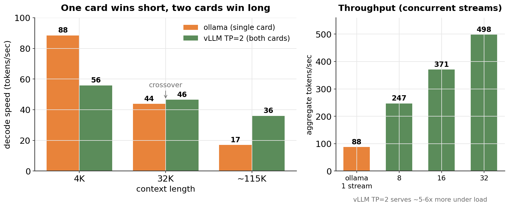

joshgreen-dev / glm-3090-benchmarks · reproducible LLM benchmarks · MIT · source on GitHub
Every number behind my writeup, plus the scripts to reproduce them, measured on a two-card desktop rather than a server. I ran this to decide what is actually worth running on hardware you own, where "does this model earn its place" is a cost question and not a leaderboard row.
glm-4.7-flash Q4-class GGUF, arch glm4moelite, 29.9B params (about 3B active), max context 202,752| context | GLM-4.7-Flash (MLA) | qwen3.5:27b (GQA) | GLM on the mini-PC |
|---|---|---|---|
| 4K | 88.5 | 34.3 | 7.3 |
| 16K | 61.6 | 32.4 | 2.1 |
| 32K | 43.8 | 30.9 | 1.1 |
| 64K | 28.3 | 29.3 | 0.6 |
| 128K | 16.8 | 24.4 | out of memory |


| context | GLM prefill | Qwen prefill |
|---|---|---|
| 4K | 2626 | 979 |
| 16K | 1849 | 947 |
| 32K | 1308 | 899 |
| 64K | 805 | 780 |
| 128K | 450 | 631 |
| context | GLM | Qwen |
|---|---|---|
| 4K | 19.5 | 22.8 |
| 16K | 20.2 | 23.4 |
| 32K | 21.2 | 24.1 |
| 64K | 23.2 | 27.4 |
| 128K | 27.7 | 31.5 |
The 24 GB line is one RTX 3090's ceiling. GLM stays under it almost the whole way and uses 27.7 GB at 128K against Qwen's 31.5, so it packs more context onto one card before spilling to the second. That is MLA working.

| context | vLLM TP=2 (both cards) | ollama (single card) | winner |
|---|---|---|---|
| 4K | 55.9 | 88.5 | ollama (link tax) |
| 32K | 46.5 | 43.8 | about even (crossover) |
| ~115K | 36.0 | ~17 (128K) | vLLM TP=2, about 2.1x |
Throughput under concurrency (both cards): 8 streams give 247, 16 give 371, 32 give 498 tokens a second aggregate, against ollama's roughly 88 single-stream. So both cards win serving load by about 5 to 6 times.

Tried a q8 KV cache to squeeze more context onto one card. It was slower at every depth from the dequant overhead (37.5 vs 43.8 at 32K, 13.4 vs 16.8 at 128K), and MLA's cache is already small enough that it did not earn its keep. Leave it at the f16 default on this hardware.
Packed the pair near the 202,752 ceiling, planted a passphrase near the top, and asked for it at the end. It answered correctly. The capacity is real on 48 GB of RTX 3090, the only question is decode speed that deep.
git clone https://github.com/joshgreen-dev/glm-3090-benchmarks cd glm-3090-benchmarks ./run_decode.sh # ollama sweep, per-context tok/s and VRAM ./run_vllm_tp2.sh # vLLM tensor-parallel, single-stream and throughput
Raw CSVs are in results/. If you want the tools I actually build with this hardware, the model
side is ModelDirectory (a 3D model search engine) and the 3D side is
GeometryViewer (a browser 3D viewer). Both exist because running things
yourself, carefully, is still cheaper than renting when you measure it honestly.
MIT licensed. Built by Josh Green while figuring out what to run locally.